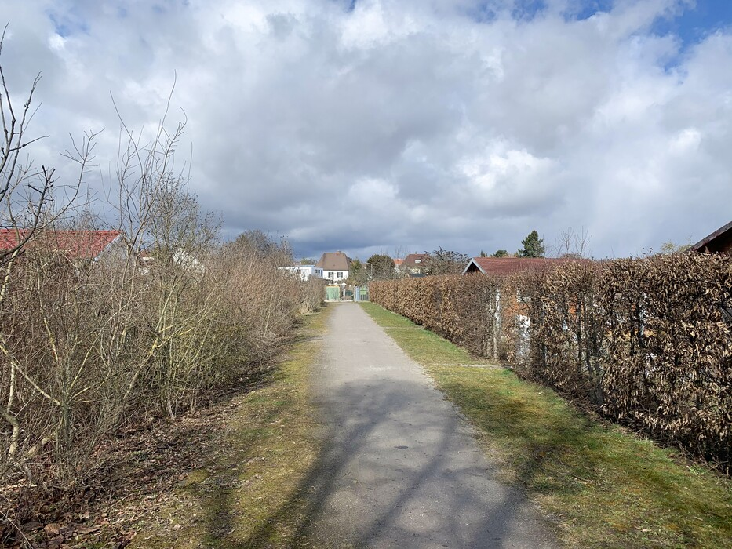
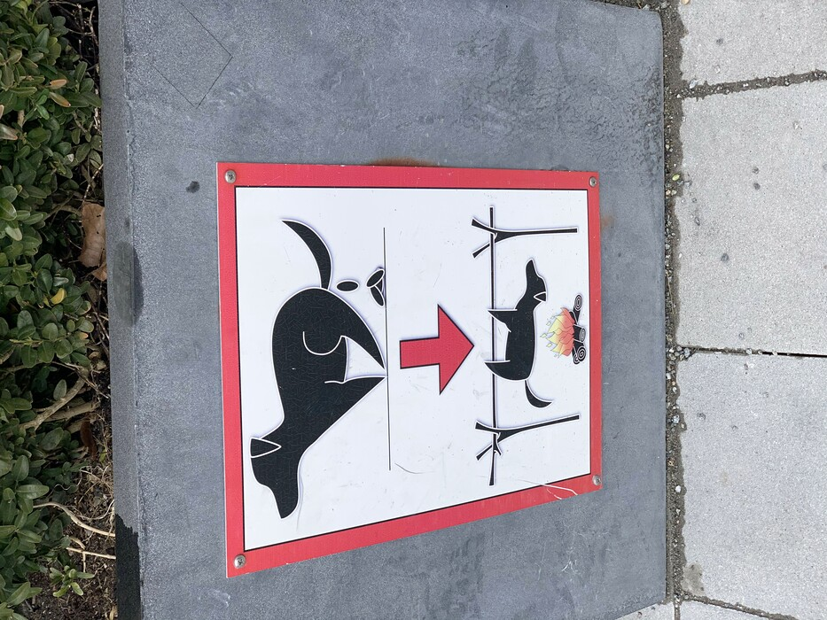
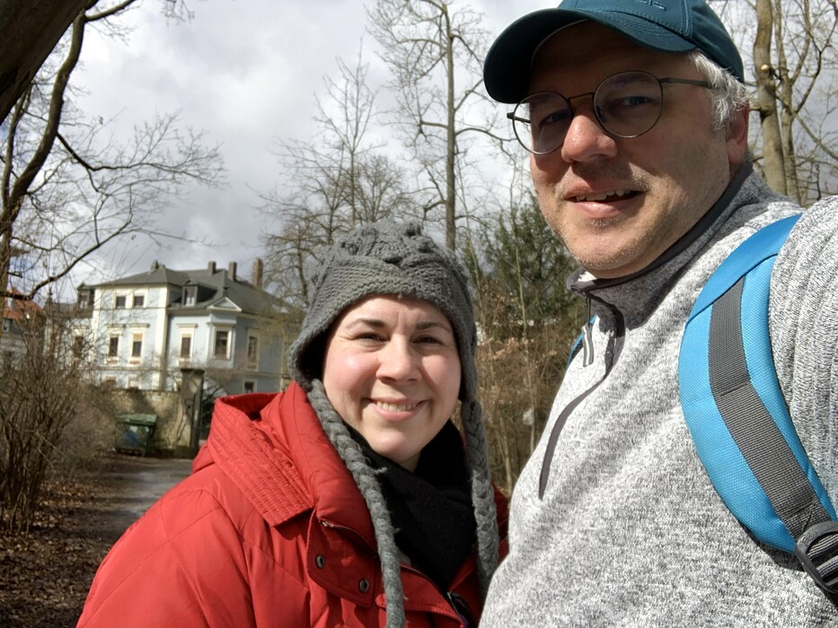
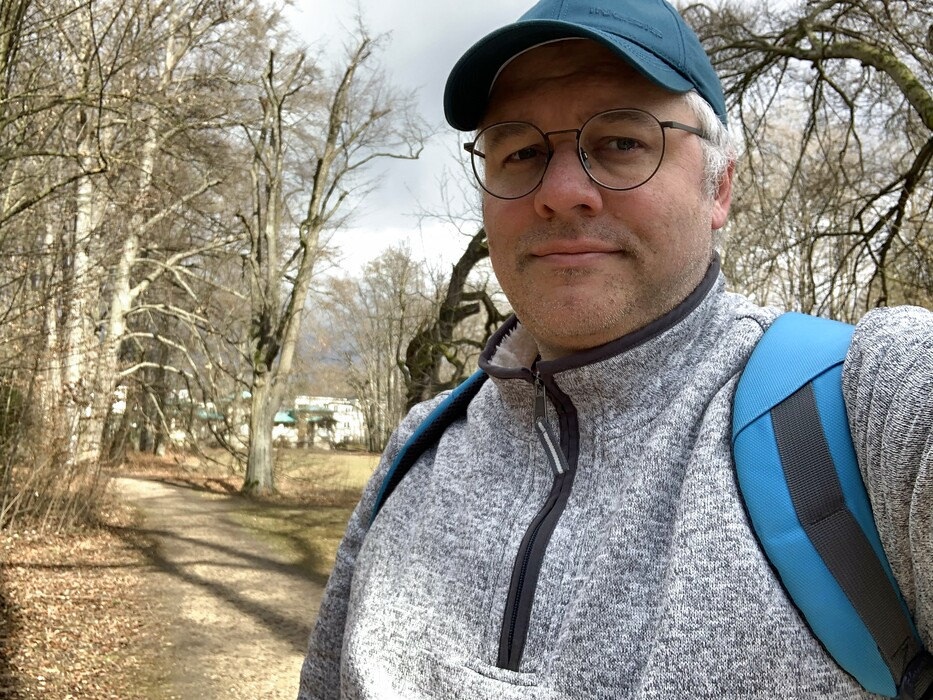
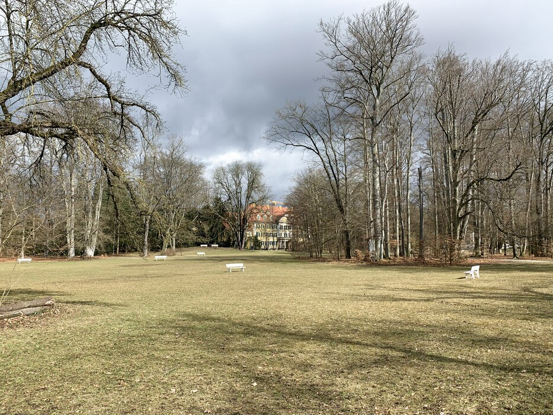
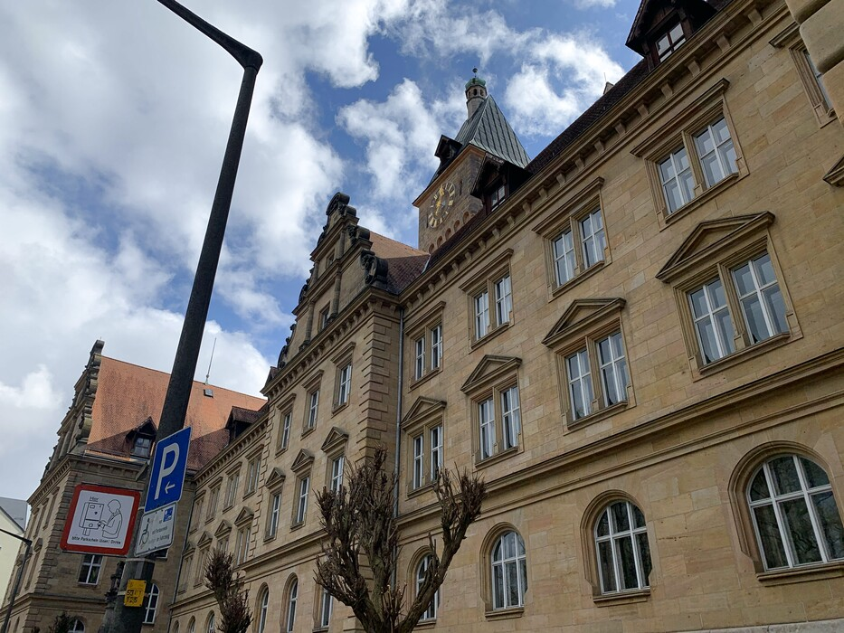
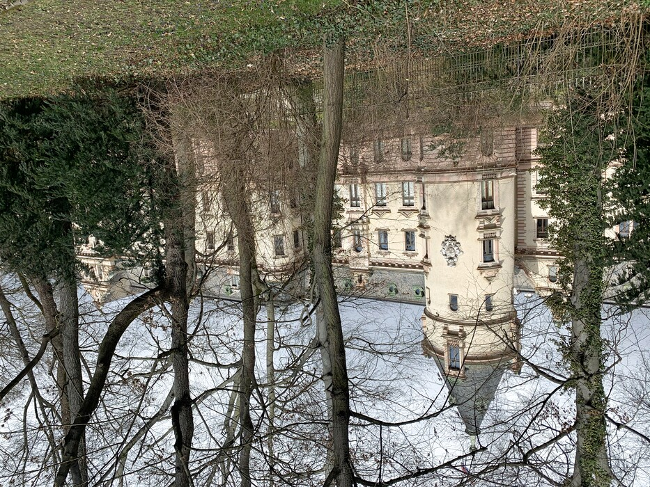

Mar 14, 2021
We took a walk today instead of my usual Sunday bike ride. We stopped in at Opera in der Prüfeninger Straße and scooped up some (counter-productive) baked goods. It reminded us that we are really looking forward to a time when we can have some Kaffee und Kuchen out at a place like Opera.







Distance: 8.42 km
Time: 1:47